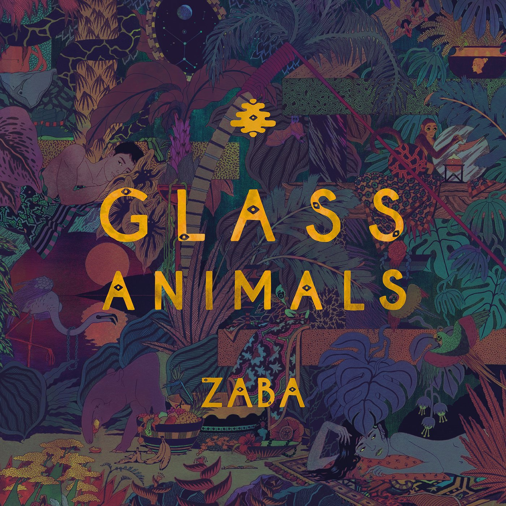

Hello everyone!, check out our new album ZABA on every available platform.
Glass Animals are an English psychedelic pop band formed in Oxford in 2010. Led by singer, songwriter, and producer Dave Bayley, the group also features his childhood friends Joe Seaward, Ed Irwin-Singer and Drew MacFarlane. Bayley wrote and produced all three Glass Animals albums. The first, Zaba (2014), spawned the single "Gooey", which was eventually certified platinum in the United States. Their second full album, How to Be a Human Being, received generally positive reviews and won in two categories at the 2018 MPG Awards for UK Album of the Year and Self Producing Artist of the Year, as well as a spot on the Mercury Prize shortlist. The third, Dreamland, their first fully autobiographical album (Bayley had said he felt it was selfish to write about oneself), included the single "Tokyo Drifting" which peaked at number seven on the Billboard Alternative Songs chart. Glass Animals have become known for their live shows, where they play re-worked, dance-heavy versions of their songs.
Made with ❤️ in Oregon
©2020 by yours truly